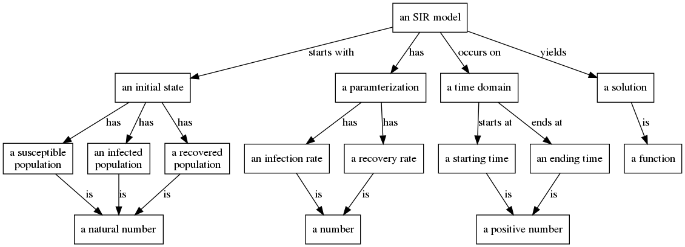
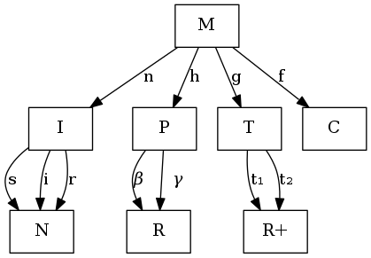
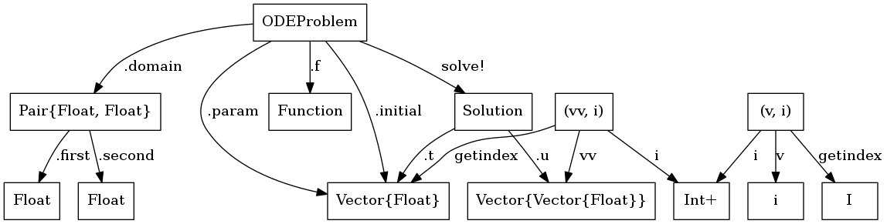
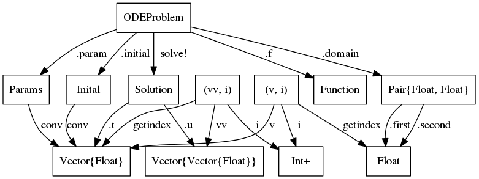

Semantic Modeling Theory
We can consider three different problems for semantic modeling
- Model Modification: Given a model $M$ and a transformation $T$ construct a new model $T(M)$.
- Metamodel construction: Given a set of a possible component models $\mathcal{M}$, known independent variables $\mathcal{I}$, and a set of desired dependent variables $V$, and a set of rules for combining models $R$construct a combination of models $m\in\mathcal{R(M)}$ that takes as input $\mathcal{I}$ and evaluates the dependent variables $V$.
- Model Validation: Given a model $M$ and a set of properties $P$ and input $x$, determine if the model satisfies all properties $P$ when evaluated on $x$
A model $M=(D,R,f)$ is a tuple containing a set $D$, called the domain, and a set $R$, called the co-domain with a function $f:D\mapto R$. If $D$ is the cross product of sets $D_1 \times D_2 \cdots D_k$ then the and $f = f(x_1\dots x_k)$ where $x$ are the independent variables of $M$. If $R=R_1\times R_2\cdots r_d$ then $R_i$ are the dependent variables of $M$.
A Modeling framework $(U,M,R)$is a universe of sets $U$, class of models $\mathcal{M}$, and a set of rules $R$. Such that the domains and co-domains of all models in $\mathcal{M}$ are elements of $\mathcal{U}$, and the class of models is closed under composition when the rules are satisfied. If $R(M_1, \dots M_n)$ then $\odot\left(M_1\dotsM_n\right)\in \mathcal{M}$. Composition of models is defined as
$\odot(M1, \dots, \Mn)=(D1\times\dots\times D{n-1}, R1\times\dots\times R{n-1}, fn(x1,\dots x{n-1})(f1(x1),\dots f{n1}(x{n-1})) $
In order to build a useful DAG, a class of models should contain models such as constants, identity, projections, boolean logic, arithmetic, and elementary functions.
We also need to handle the case of model identification. There are certain models within a framework that are essentially equivalent. For example if $D_1$ and $D_2$ are sets with homomorphism $g:D_2\mapsto D_1$, then $M_1 = (D_1, R, f) = (D_2, R, f \odot g)$ are equivalent as models. In fact $(D_2, D_1, g)$ should be included in the class of models in a modeling framework.
We need a good theoretical foundation for proving theorems about manipulating models and combining them. Categories for Science may be that foundation.
The work of Evan Patterson on building semantic representations of data science programs is particularly relevant to these modeling questions SRDSP. Patterson 2018
Categories for Science
Dan Spivak wrote a wonderful book on category theory for scientists based on his lectures at MIT http://math.mit.edu/~dspivak/CT4S.pdf.
Data gathering is ubiquitous in science. Giant databases are currently being mined for unknown patterns, but in fact there are many (many) known patterns that simply have not been catalogued. Consider the well-known case of medical records. A patient’s medical history is often known by various individual doctor-offices but quite inadequately shared between them. Sharing medical records often means faxing a hand-written note or a filled-in house-created form between offices.
Similarly, in science there exists substantial expertise making brilliant connections between concepts, but it is being conveyed in silos of English prose known as journal articles. Every scientific journal article has a methods section, but it is almost impossible to read a methods section and subsequently repeat the experiment—the English language is inadequate to precisely and concisely convey what is being done
This is the point of our project, to mine the code and docs for the information necessary to repeat and expand scientific knowledge. Reproducible research is focused on getting the code/data to be shared and runnable with VMs/Docker etc are doing the first step. Can I repeat your analysis? We want to push that to expanding.
Ologs
Ontology logs are a diagrammatic approach to formalizing scientific methodologies. They can be used to precisely specify what a scientist is talking about. Spivak, D.I., Kent, R.E. (2012) “Ologs: A Categorical Framework for Knowledge Representation.” PLoS ONE 7(1): e24274. doi:10.1371/journal.pone.0024274.
An olog is composed of types (the boxes) and aspects (the edges). The labels on the edges is the name of the aspect. An aspect is valid if it is a function (1-many relation).

We can represent an SIR model as an olog as shown below.

Another category theory representation without the human readable names used in an olog shows a simpler representation.

Models in the Category of Types
All programs in a strongly typed language have a set of types and functions that map values between those types. For example the Julia program
a = 5.0
b = 1
c = 2*a
d = b + cHas the types Int, Float and functions *, + which are both binary functions. These types and functions can be represented as a category, where the objects are the types and the morphisms are the functions. We refer to the input type of a function as the domain and the output type as the codomain of the function. Multi-argument functions are represented with tuple types representing their argument. For example +(a::Int,b::Int)::Int is a function $+: Int\times Int -> Int$. These type categories are well studied in the field of Functional Programming. We apply these categories to the study of mathematical models.
One can use a combination of static and dynamic analysis to extract this category representation from a program and use it to represent the model implemented by the code.
The most salient consequence of programming language theory is that the more information that a programmer can encode in the type system, the more helpful the programming language can be for improving performance, quality, and correctness.
We want to leverage the type system to verify the semantic integrity of a model. This is critical when pursuing automatic model modification. Model developers use any number of conventions to encode semantic constraints into their code for example, prefacing all variables that refer to time with a t, such as t_start, s_end. This semantic constraint that all variables named t_ are temporal variables is not encoded in the type system because all those variables are still floats. Another example is that vectors of different lengths are incompatible. In a compartment model, the number of initial conditions must match the number of compartments, and the number of parameters may be different. For example in an SIR model there are 3 initial conditions, $S,I,R$ and there are 2 parameters $\beta, \gamma$. These vectors are incompatible, you cannot perform arithmetic or comparisons on them directly. Most computational systems employed by scientists will use a runtime check on dimensions to prevent a program from crashing on malformed linear algebra. Scientists rely on this limited from of semantic integrity checking provided by the language.
Our goal is to extract and encode the maximum amount of information from scientific codes into the type system. The type system is analyzable as a category. Thus we can look at the category of types and analyze the integrety of the programs. For example if there are two types $S,T$ and two functions $f,g: S\arrow T$ such that $Codom(f) = Codom(g)$ but $Range(f) \cap Range(g)$, then we say that the type system is ambiguous in that there are two functions that use disjoint subsets of their common codomain. In order to more fully encode program semantics into the type system, the programmer (or an automated system) should introduce new types to the program to represent these disjoint subsets.  Returning to the SIR model example, the .param and .initial functions both map Problem to Vector{Float} but have disjoint ranges. From our mathematical understanding of the model, we know that parameters and initial conditions are incompatible types of vectors, for one thing the output of .param is length 2 and the output of .initial is length 3. Any program analysis of the model will be hampered by the ambiguity introduced by using the same type to represent two different concepts. On the other hand, .first and .second have overlapping ranges and are comparable as times.

This is an example of how PL theory ideas can improve the analysis of computational models.